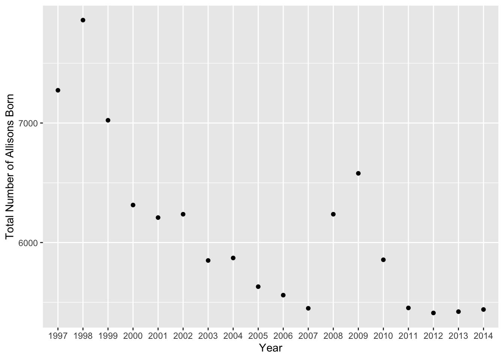
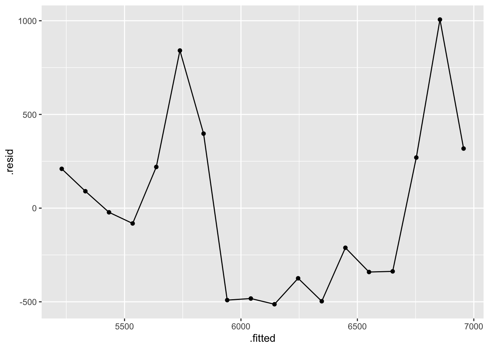
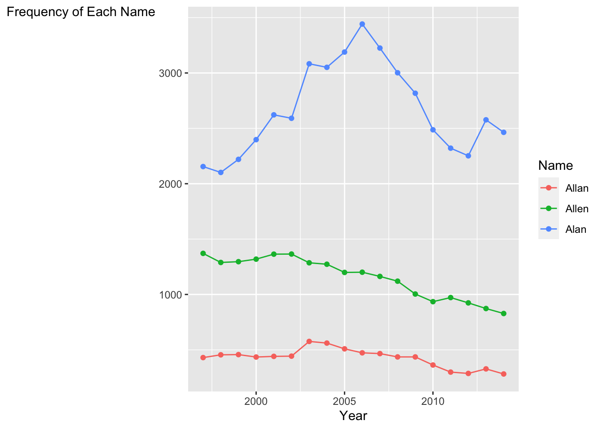

names <- read_csv(here::here("supporting_artifacts", "learning targets", "StateNames_A.csv"))Challenge 9: Baby Names
names <- names |>
rename("Sex" = "Gender")
datatable(head(names))Summarizing and Visualizing the Number of Allisons
Question 1
names_new <- names |>
filter(Name == "Allison") |>
group_by(State, Sex) |>
summarize("counts" = sum(Count), .groups = "keep") |>
pivot_wider(names_from = Sex, values_from = counts)
names_new[is.na(names_new)] = 0
kable(names_new, col.names = c("State", "Female", "Male"))| State | Female | Male |
|---|---|---|
| AK | 232 | 0 |
| AL | 1535 | 0 |
| AR | 1198 | 0 |
| AZ | 1880 | 0 |
| CA | 12413 | 0 |
| CO | 1594 | 0 |
| CT | 1099 | 0 |
| DC | 321 | 0 |
| DE | 294 | 0 |
| FL | 4455 | 0 |
| GA | 3257 | 0 |
| HI | 183 | 0 |
| IA | 1477 | 0 |
| ID | 451 | 0 |
| IL | 5110 | 0 |
| IN | 3067 | 0 |
| KS | 1283 | 0 |
| KY | 1905 | 20 |
| LA | 1209 | 0 |
| MA | 2218 | 0 |
| MD | 2229 | 0 |
| ME | 340 | 0 |
| MI | 4014 | 0 |
| MN | 2374 | 0 |
| MO | 2882 | 0 |
| MS | 817 | 0 |
| MT | 226 | 0 |
| NC | 3435 | 0 |
| ND | 285 | 0 |
| NE | 807 | 0 |
| NH | 412 | 0 |
| NJ | 3052 | 0 |
| NM | 399 | 0 |
| NV | 729 | 0 |
| NY | 5747 | 0 |
| OH | 5487 | 0 |
| OK | 1421 | 0 |
| OR | 1186 | 0 |
| PA | 4307 | 0 |
| RI | 306 | 0 |
| SC | 1228 | 0 |
| SD | 376 | 0 |
| TN | 2488 | 0 |
| TX | 10192 | 0 |
| UT | 1125 | 0 |
| VA | 3220 | 0 |
| VT | 135 | 0 |
| WA | 1956 | 0 |
| WI | 2367 | 0 |
| WV | 813 | 0 |
| WY | 142 | 0 |
Questions 2&3
Challenge: I made the Year variable a factor so that each year would be displayed on the x-axis. I know that once you said that making the variable continuous would do the same thing but I wasn’t able to use that method to make sure all the years were present in the labels.
allisons <- names |>
filter(Name == "Allison",
Sex == "F") |>
group_by(Year) |>
summarize(counts = sum(Count), .groups = "keep")
allisons |>
ggplot(mapping = aes(x = factor(Year), y = counts)) +
geom_point() +
ylab("Total Number of Allisons Born") +
xlab("Year")
Modeling the Number of Allisons
Questions 4&5
allison_lm <- allisons |>
lm(counts ~ Year, data = _)
allison_lm
Call:
lm(formula = counts ~ Year, data = allisons)
Coefficients:
(Intercept) Year
209689.8 -101.5 Question 6
Regression Equation:
Number of Allisons = -101.5*Year + 209689.8
Question 7
allison_lm |>
broom::augment() |>
ggplot(mapping = aes(y = .resid, x = .fitted)) +
geom_point() +
geom_line()
The name Allison is still cool and popular, just not as much as it used to be. The residual for 2014 is above 0, indicating that the usage of Allison is still above the mean.
Spelling by State
Question 8
Challenge: I rotated the y-axis label so that you don’t have to turn your head to read it. I also reordered the legend so that they would go in the order that they appear in the graph, but I couldn’t figure out how to reverse the order, as it is flipped right now.
names |>
filter(Name == "Allan" | Name == "Allen" |Name == "Alan") |>
mutate(Name = as.factor(Name)) |>
group_by(Year, Name) |>
summarize(counts = sum(Count)) |>
ggplot(mapping = aes(x = Year, y = counts, color = fct_reorder(.f = Name,
.x = counts,
.fun = sum))) +
geom_line() +
geom_point() +
labs(color = "Name") +
ylab("Frequency of Each Name") +
theme(axis.title.y = element_text(angle = 0))
Question 9
Challenge: I used kableExtra to add another row of column headings to this table.
allens <- names |>
filter(Name == "Allan" | Name == "Allen" |Name == "Alan",
Year == 2000,
State == "CA" | State == "PA") |>
group_by(State, Name) |>
summarize(counts = sum(Count), .groups = "keep") |>
pivot_wider(names_from = Name, values_from = counts)
kable(allens, booktabs = TRUE) |>
add_header_above(c("Location" = 1, "Frequency of Name" = 3))| State | Alan | Allan | Allen |
|---|---|---|---|
| CA | 584 | 131 | 176 |
| PA | 51 | 12 | 56 |
Question 10
allens |>
pivot_longer(cols = "Alan":"Allen", names_to = "Name", values_to = "Count") |>
pivot_wider(names_from = State, values_from = Count) |>
mutate(CA = CA/sum(CA)) |>
mutate(PA = PA/sum(PA)) |>
pivot_longer(cols = "CA":"PA",names_to = "State", values_to = "Proportion") |>
pivot_wider(names_from = Name, values_from = Proportion) |>
kable(col.names = c("State", "Proportion of Alans", "Proportion of Allans", "Proportion of Allens"))| State | Proportion of Alans | Proportion of Allans | Proportion of Allens |
|---|---|---|---|
| CA | 0.6554433 | 0.1470258 | 0.1975309 |
| PA | 0.4285714 | 0.1008403 | 0.4705882 |